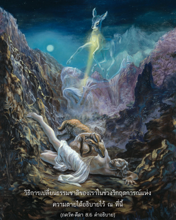

ไม่ว่าจิตสำนึกระลึกถึงอะไรขณะที่ออกจากร่าง โอ้ โอรสพระนาง กุนฺตี เขาจะได้รับสิ่งนั้นอย่างแน่นอน


วิธีการเปลี่ยนธรรมชาติของเราในช่วงวิกฤตการณ์แห่งความตายได้อธิบายไว้ ณ ที่นี้ ในบั้นปลายชีวิตบุคคลออกจากร่าง และคิดถึงองค์กฺฤษฺณจะได้รับธรรมชาติทิพย์แห่งองค์ภควานฺ ไม่เป็นความจริงที่บุคคลคิดถึงอย่างอื่นนอกจากองค์กฺฤษฺณแล้วจะบรรลุถึงระดับทิพย์ได้ ประเด็นนี้เราควรพึงสังเกตด้วยความระมัดระวัง เราจะสามารถตายในสภาวะจิตที่ถูกต้องได้อย่างไร มหาราช ภารต แม้จะเป็นบุคลิกภาพผู้ยิ่งใหญ่ทรงคิดถึงกวางในบั้นปลายของชีวิตชาติต่อมาจึงถูกย้ายเข้าไปในร่างกวาง แม้เป็นกวางท่านก็ยังระลึกถึงกรรมในอดีตได้จึงต้องยอมรับร่างสัตว์นั้น แน่นอนว่าความคิดในขณะที่เรามีชีวิตอยู่สะสม และมีอิทธิพลต่อความคิดของเราในขณะที่ตาย ดังนั้น ชีวิตนี้จึงปูทางไว้สำหรับชาติหน้า หากปัจจุบันเราใช้ชีวิตในระดับแห่งความดี และคิดถึงองค์กฺฤษฺณเสมอ ก็เป็นไปได้ที่เราจะระลึกถึงองค์กฺฤษฺณในบั้นปลายของชีวิต เช่นนี้จะช่วยย้ายเราไปสู่ธรรมชาติทิพย์แห่งองค์กฺฤษฺณ หากมีความซึมซาบอยู่ในระดับทิพย์ในการรับใช้องค์กฺฤษฺณ ร่างต่อไปของเราจะเป็นทิพย์ไม่ใช่วัตถุ ดังนั้น การสวดภาวนา หเร กฺฤษฺณ หเร กฺฤษฺณ กฺฤษฺณ กฺฤษฺณ หเร หเร / หเร ราม หเร ราม ราม ราม หเร หเร เป็นวิธีที่ดีที่สุด เพื่อความสำเร็จในการเปลี่ยนระดับจิตสำนึกในบั้นปลายของชีวิตเรา